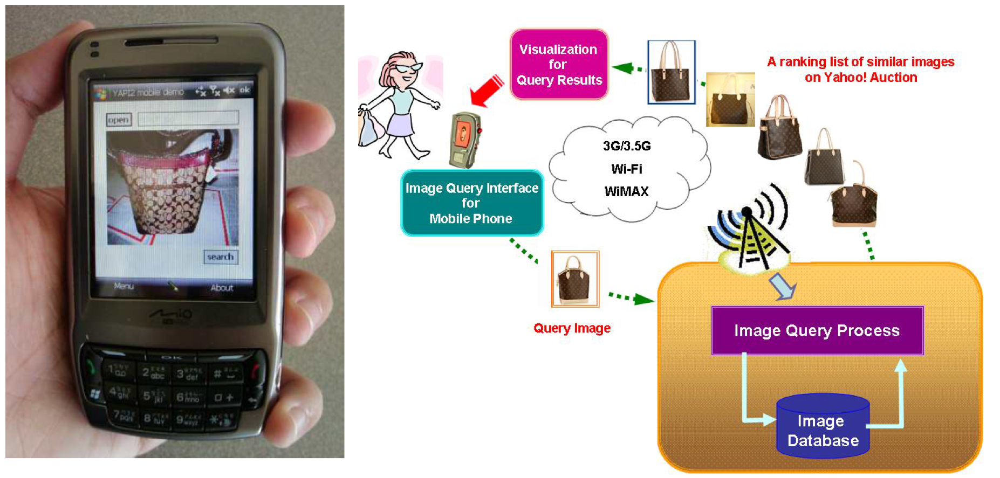

|
Large-Scale Image Object Search and Mobile Applications |
Objective
Devised novel efficient and effective approaches for object visual search over large-scale datasets by investigating object/feature representation, indexing structure, geometry transformation, etc.
Papers
- "Detecting Viewing Directions to Landmarks for Recommendation by Large-scale Usercontributed Photos," Yen-Ta Huang, Kuan-Ting Chen, Liang-Chi Hsieh, and Winston H. Hsu, ACM Multimedia (MM), Nara, Japan, October 2012.
- "Boosting Image Object Retrieval and Indexing by Automatically Discovered Pseudo-Objects," Kuan-Ting Chen, Kuan-Hung Lin, Yin-Hsi Kuo, Yi-Lun Wu, Winston Hsu, Journal of Visual Communication and Image Representation, special issue on Large-Scale Image and Video Search: Challenges, Technologies, and Trends, 2010.
- "A Technical Demonstration of Large-Scale Image Object Retrieval by Efficient Query Evaluation and Effective Auxiliary Visual Feature Discovery," Yin-Hsi Kuo, Yi-Lun Wu, Kuan-Ting Chen, Yi-Hsuan Yang, Tzu-Hsuan Chiu, and Winston H. Hsu, ACM Multimedia (MM), Firenze, Italy, October 2010.
- "Query Expansion for Hash-based Image Object Retrieval," Yin-Hsi Kuo, Kuan-Ting Chen, Chien-Hsing Chiang, and Winston Hsu, ACM Multimedia (MM), Beijing, China, October 2009.
- "Canonical Image Selection and Efficient Image Graph Construction for Large-Scale Flickr Photos," Liang-Chi Hsieh, Kuan-Ting Chen, Chien-Hsing Chiang, Yi-Hsuan Yang, Guan-Long Wu, Chun-Sung Ferng, Hsiu-Wen Hsueh, Angela Charng-Rurng Tsai, Winston H. Hsu, Grand Challengefor ACM Multimedia (MM), Beijing, China, October 2009.
- "Boosting Object Retrieval By Estimating Pseudo-Objects," Kuan-Hung Lin, Kuan-Ting Chen, Winston Hsu, Chun-Jen Lee, and Tien-Hsu Li, International Conference on Image Processing (ICIP), Cairo, Egypt, November 2009.
- Mobile image query project, TV news and newspapers September 2009
1st Gold Award 8th YSED Contest, Mobile Software Competition, Taiwan May 2011
Media News: (Mandarin)
TV news [Video] TVBS Apple Daily
Abstract
The objective of content-based visual matching is to detect specific objects, which are most likely a local region compared to a whole frame. With the explosion of photos/videos, an image database can easily have millions or even billions of photos. Therefore, retrieving user desired photos or information has become a challenge. The goal of this project was to enable effective and efficient object retrieval over large-scale image databases with rich associated information for practical applications, such as landmark search for travel information; online store and auction product search; and painting and artwork search.
 |
 |